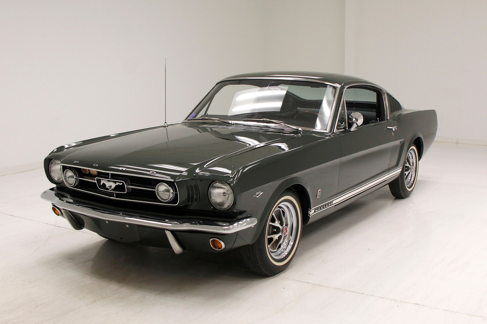
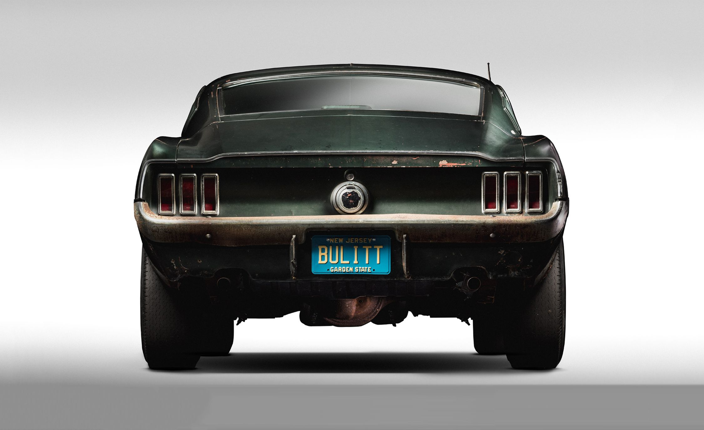

The Legacy of the Ford Mustang
The Ford Mustang rolled out the red carpet and made its grand entrance on April 17, 1964, and in a blibk of an eye the country entered a new era of American muscle cars. The ford mustang branded as a stylish, affordable performance coupe easily stood up to the mark and as mentioned before it instantly became a great symbol of freedom, rebellion, and that speed that made people feel alive.
From the original and iconic 1965 fastback to the legendary and everlasting 1969 Boss 429 and the undeniably breath taking fox body Mustangs of the '80s, the Mustang evolved into a true stallion all while staying true to its soul.
Modern Muscle: 2024 Ford Mustang
The 2024 Mustang last year made its debut into the seventh generation of glory now with sharper lines, digital upgrades, refined and if I do say so myself redeined power. and ofcourse available in multiple variants:
- EcoBoost: 2.3L Turbo I4 | 315 hp | 0–100 km/h in => 5.5s
- GT: 5.0L Coyote V8 | 480–486 hp | 0–100 km/h in => 4.3s
- Dark Horse: 5.0L V8 Performance | 500 hp | 0–100 km/h in => 4.1s
Boasting a 6-speed manual or 10-speed automatic, and rear-wheel drive, 2024 Mustang is not just raw power but also, connected, and powerful.
Performance Stats
GT
Top Speed: => 250 km/h
0–100 km/h: => 4.3s
Horsepower: 486 hp
Dark Horse
Top Speed: => 276 km/h
0–100 km/h: => 4.1s
Horsepower: 500 hp
Did You Know?
- “Mustang” is more than a stallion the design was inspired by the P-51 fighter plane, not just the horse.
- 400,000 upwards of Mustangs were sold in its first year of its launch (1965).
- It has been in production since 1964, that in itselve's a rare feat.
- Learn more about the Mustang ->